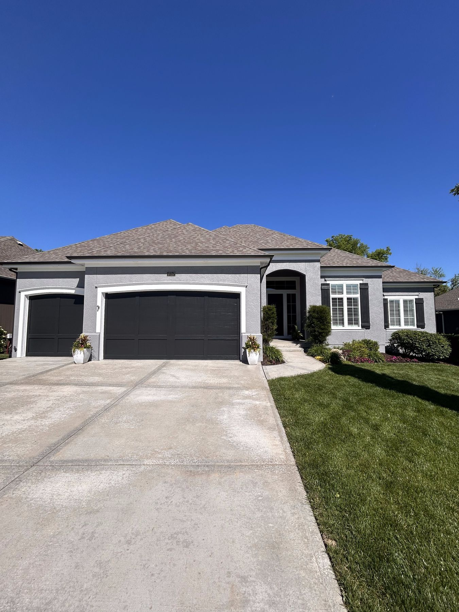

Your neighbors' painter — EverPro is based right here in Overland Park, and some of our best transformations are on your streets.
Get Your Free EstimateEverPro Painting is based in Overland Park — this isn't a service area on a map to us, it's home. When Ethan walks your home for an estimate, he's usually minutes away, and the finished jobs he'll show you are on streets you drive every day.
Overland Park homes have their own patterns — stucco and hardboard exteriors from the 80s and 90s builds, HOA color requirements in many neighborhoods, and plenty of golden-oak kitchens overdue for a refresh. We work with all of it weekly:

We're based here. Many of our recent exterior and cabinet projects are in Overland Park and the surrounding Johnson County suburbs — Ethan can show you finished homes nearby during your estimate.
Yes. Many OP neighborhoods require color approval before exterior work — we'll help you choose a palette that clears your HOA and still transforms the house.
It depends on your home — size, stories, and surface condition drive it far more than zip code. Read how we price every job, then get your real number with a free walkthrough.
All of Johnson County and the KC metro: Olathe, Lenexa, Shawnee, Leawood, Prairie Village, Mission, Merriam, Gardner, and beyond — plus the Missouri side including Lee's Summit, Blue Springs, and Liberty.
Always — and it's the owner who shows up. Ethan walks your home with you, no salesmen, and you get a detailed written quote. The number we quote is the number you pay.
Owner-led walkthrough, usually scheduled within days.
Request a Free EstimateOr call/text 913-210-1041